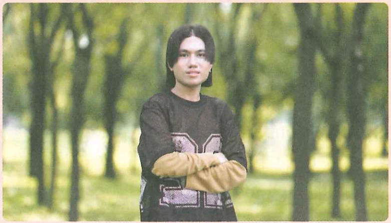

大声朗读。Read aloud.Прочитайте вслух.
(1)你也很忙吗？Are you also busy?Ты тоже занят?
(2)你是他的中文老师吗？Are you his Chinese teacher?Вы его учитель китайского?
(3)你有姐姐吗？Do you have (yǒu, have) an older sister?У тебя есть (yǒu, have) старшая сестра?
综合练习Comprehensive ExercisesКомплексные упражнения
选词填空。Choose the proper words/phrases to fill in the blanks.Выберите подходящие слова/фразы, чтобы заполнить пропуски.
A 哪 B 吗 C 谁 D 中国人 E 想A where B (q.p.) C who D Chinese person E to want/thinkA где B (вопр. ч.) C кто D китаец E хотеть/думать
(1)你工作忙______？Are you busy with work ______?Ты занят на работе ______?
(2)我很______你们。I ______ you all very much.Я очень ______ вас.
(3)白家月：你是______国人？ 李 文：我是______。Bai Jiayue: You are from ______ country? Li Wen: I am ______.Бай Цзяюэ: Ты из ______ страны? Ли Вэнь: Я ______.
(4)白家月：她是______？ 安 妮：她是陈天中的女朋友。Bai Jiayue: She is ______? An Ni: She is Chen Tianzhong's girlfriend.Бай Цзяюэ: Она ______? Ань Ни: Она девушка Чэнь Тяньчжуна.
用本课新学的词语和语言点描述图片。Describe the pictures using the newly-learned words and language points in this lesson.Опишите картинки, используя новые слова и языковые моменты из этого урока.

他______陈天中，是泰国人， 他______也______泰国人。He ______ Chen Tianzhong, is Thai, he ______ also ______ Thai.Он ______ Чэнь Тяньчжун, таец, он ______ тоже ______ таец.
王一飞是______中文老师， 她______很______。Wang Yifei is ______ Chinese teacher, she ______ very ______.Ван Ифэй ______ учитель китайского, она ______ очень ______.
015